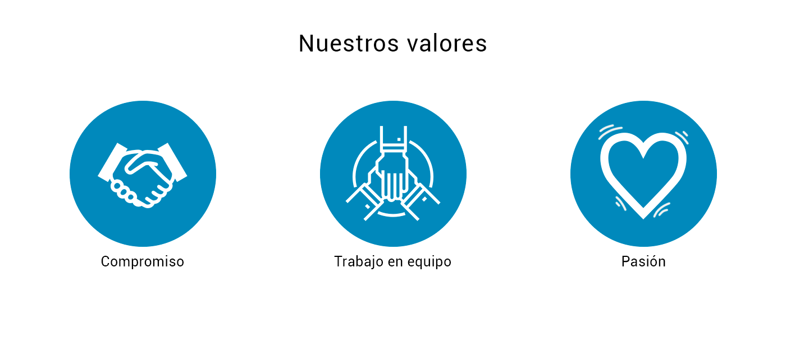
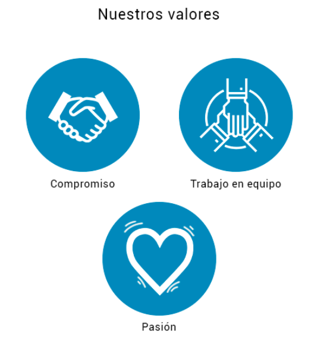

Sobre 3Shards
Desde el año 2015 trabajamos en potenciar los deportes electrónicos (esports) en Uruguay.
Siendo pioneros en la producción profesional y a escala en el país, nos hemos enfocado año tras año en mejorar y aumentar nuestros niveles de calidad y variedad de oferta, con el objetivo de dar visibilidad a un ecosistema latente y en permanente crecimiento, en nuestro Uruguay y el mundo.
Con especial foco en la producción de eventos presenciales masivos y torneos online; 3shards cuenta con los recursos y la experiencia para llevar adelante producción de contenidos para espacios en tiendas y ferias, activaciones con influencers, asesoramiento de marketing y branding del sector, entre otras actividades.

